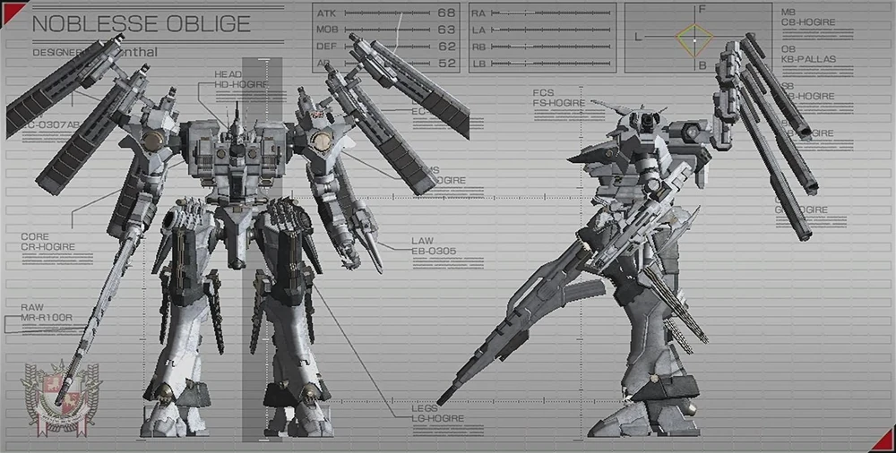
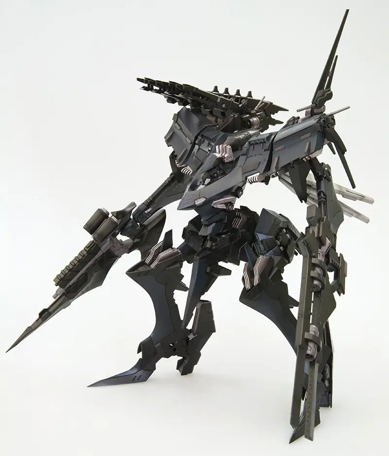
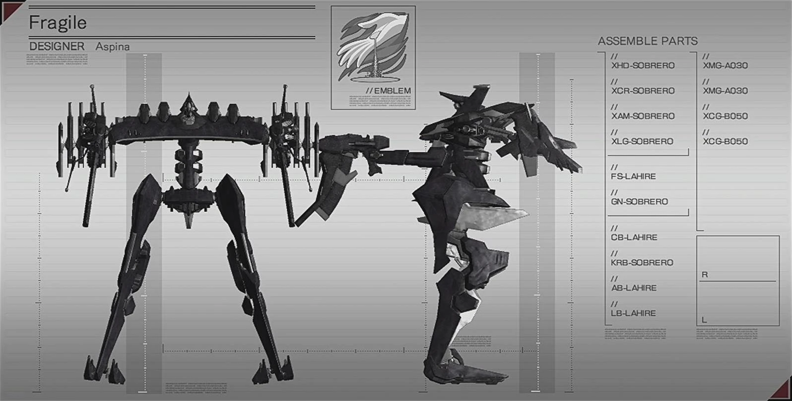

Basicamente, en este videojuego, los mechs son apodados como "nexts", y se demostraran los siguientes ejemplos de los mas conocidos:

El 03-AALIYAH es uno de los primeros NEXT, que apareció en la Guerra de Desmantelamiento Nacional y fue utilizado por muchos de los LYNX de Rayleonard. Considerado su modelo insignia, fue optimizado con el uso de la entonces experimental Armadura Primal y se desempeña excepcionalmente bien en combate a alta velocidad. Algunos de los mejores LYNX, como Berlioz (n.° 1) y Anjou (n.° 3), utilizaron este NEXT con pequeñas variaciones en sus armas. Si bien sobresale en combate terrestre, el NEXT de Rayleonard sufre de baja durabilidad de AP, alto consumo de energía y una precisión de puntería particularmente baja (lo cual se consideró de poca importancia ya que los brazos del 03 estaban diseñados para usarse en combate a alta velocidad, requiriendo más velocidad de puntería que precisión).

Noblesse Oblige, un ejemplo perfecto de la filosofía de Rosenthal de priorizar la calidad sobre la cantidad, es un NEXT completamente blanco basado en el modelo estándar TYPE-HOGIRE. Sus principales armas de mano consistían en un rifle Rosenthal estándar y una espada láser Omer de potencia media. El rasgo más distintivo de Noblesse Oblige son sus dos cañones láser triples montados en la espalda. Creados por Omer, son similares a los cañones Sirius Hi-Laser, aunque menos potentes. Para compensar esta desventaja, disparaban con cada uno de los tres cañones por disparo. Estas armas se asemejan mucho a alas, lo que le confiere al NEXT un parecido notable con los ángeles de la mitología, y a la vez servían como armas especialmente poderosas.

Un NEXT de peso medio, completamente blanco, que ostenta el emblema y el nombre del NEXT del fallecido Joshua O'Brien. Este White Glint se diferencia estéticamente del White Glint de O'Brien; se asemeja al chasis SOLUH NEXT de Algebra, y sus componentes son de fabricación personalizada por Line Ark. El NEXT también se transforma para ciertas acciones: durante el Over Boost, una multitud de propulsores se extienden y se abren, y la cabeza se hunde en el torso; al activar su Armadura de Asalto, el chasis de la nave se expande y ciertas partes adquieren blindaje adicional. El NEXT fue diseñado por Abe Marsh, el mismo diseñador del White Glint de O'Brien. El White Glint está armado con dos rifles fabricados por BFF: el 051ANNR en la mano derecha y el 063ANAR en la izquierda. Está equipado con dos misiles de dispersión SALINE05 en la espalda. Debido a la forma en que se construyeron los hombros del NEXT, el White Glint no puede equiparse con armas de hombro. En algunos casos, también puede reactivarse tras haber sido desactivada una vez.[30] Al igual que el White Glint de Joshua O'Brien, esta nave está diseñada para el combate a alta velocidad.

White Glint fue el NEXT personal de Joshua O'Brien, uno de los LYNX más reconocidos de la Guerra de Desmantelamiento Nacional. Construido por Rayleonard, este NEXT destacó por su excelente equilibrio entre movilidad, potencia de fuego y eficiencia energética, convirtiéndose rápidamente en una de las unidades más respetadas de su época. Joshua O'Brien utilizó White Glint durante numerosas operaciones importantes, ganándose una reputación como un piloto honorable y extremadamente capaz. Sin embargo, tras los acontecimientos de Armored Core 4, Joshua desapareció de la escena y White Glint pasó a convertirse en una leyenda entre los LYNX. Más adelante, el legado de Joshua sería superado por el Mercenario de Anatolia, quien pilotaba una versión mejorada conocida por los fanáticos como White Glint Line Ark debido a sus similitudes de diseño y filosofía de combate. Gracias a las hazañas de ambos pilotos, White Glint es recordado como uno de los NEXT más emblemáticos de toda la cuarta generación de Armored Core.

Stasis es el NEXT pilotado por Celo, uno de los miembros más destacados de ORCA en Armored Core: For Answer. Diseñado para el combate de alta movilidad, destaca por su gran velocidad y capacidad para atacar rápidamente antes de retirarse de la línea de fuego. Su configuración equilibrada le permite combatir tanto en tierra como en el aire, convirtiéndolo en una de las unidades más peligrosas del conflicto. Durante la campaña, Stasis participa en varias operaciones importantes relacionadas con la lucha contra las corporaciones dominantes y el proyecto ORCA. Gracias a su rendimiento y a la habilidad de su piloto, es considerado uno de los NEXT más reconocidos de la era.

Fragile es un NEXT famoso por su extraordinaria velocidad y maniobrabilidad. Pilotado por Kasumi Sumika, fue diseñado para maximizar la movilidad aérea, permitiéndole realizar movimientos extremadamente rápidos que dificultan ser alcanzado por los enemigos. Sin embargo, como su nombre indica, Fragile sacrifica gran parte de su blindaje y resistencia para alcanzar ese rendimiento excepcional. Aunque posee una baja durabilidad en comparación con otros NEXT, puede resultar devastador en manos de un piloto experimentado capaz de aprovechar su velocidad para evitar ataques y lanzar ofensivas precisas.